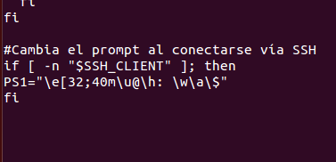

- Módulo: Administración de Sistemas Operativos
- Título del trabajo Acceso SSH
- Componentes del grupo: Silvano Pérez Yanes
- Curso Académico: 2014/2015
- Fecha de entrega: 27 de Enero de 2014
En esta actividad vamos a conectarnos a los usuarios de un server desde una maquina externa, utilizando el openSSH. En estas se muestra la instalación del sistema operativo y el programa ha instalar; tambien configuramos el fichero etc/hosts para que el server y los clientes asocien las ips con los nombre asignados en el fichero de configuración.
En este apartado comprobamos los servicios del openSSH; también comprobamos la clave que tiene openSSH.
A continuación, comfiguramos el fichero del prompt, en el server para que cuando nos conectemos al usuario que querramos tener configurado con el prompt, podamos ver los cambios hechos en el prompt.
En este apartado vamos ha crear un par de claves para que cuando nos intentemos loguear en el usuario que tener configurado de esta manero, podamos acceder de manera directa sin usar logins.
En este apartado, el objetivo es mediante la conexión remota poder acceder a los programas instalado en el server, ya sea con el comando SSH -X o con el emulador Wine.
Por último, vamos a crear unas restricciones para que las ips no registrado en los ficheros de configuración no puedan acceder; también mediante permisos de usuarios y grupos, para que los usuarios no pertenecientes los grupos no puedan acceder a los programas.